산업보건지도사 (2014-04-12 기출문제)
1과목: 산업안전보건법령
1. 산업안전보건법령상 유해ㆍ위험한 작업의 도급에 대한 다음 내용에 관한 설명으로 옳지 않은 것은?
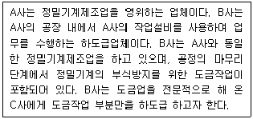
- 도금작업은 안전·보건상 유해하거나 위험한 작업에 해당하므로, 이를 분리하여 하도급을 주는 경우에는 인가를 받아야 한다.
- B사는 C사에 대한 도급인가를 받기 위하여 관할 지방고용노동관서의 장에게 도급인가 신청서를 제출하여야 한다.
- B사는 도급인가 신청서를 제출할 때 도금작업을 포함한 전체 작업의 공정도와 도급계획서를 첨부하여야 한다.
- 지방고용노동관서의 장은 도급인가 신청서가 접수된 날부터 10일 이내에 신청서를 반려하거나 인가증을 신청자에게 발급하여야 한다.
- 지방고용노동관서의 장은 도급인가를 신청한 사업장이 유해하거나 위험한 작업의 도급 시 지켜야 할 안전·보건조치의 기준을 지키고 있는지 확인할 필요가 있는 경우에는 한국산업안전보건공단으로 하여금 기술적 사항을 확인하게 할 수 있다.
(정답률: 알수없음)

2. 산업안전보건법령상 도급사업 시의 안전보건조치에 관한 설명으로 옳지 않은 것은?
- 제조업의 사업주가 사업의 일부를 도급한 경우 도급인인 사업주는 1주일에 1회 이상 작업장을 순회점검하여야 한다.
- 건설업의 사업주가 안전ㆍ보건에 관한 협의체를 구성한 경우 그 협의체에 근로자위원으로서 도급 또는 하도급 사업을 포함한 전체 사업의 근로자대표, 명예산업안전감독관 및 근로자대표가 지명하는 해당 사업장의 근로자를 포함한 산업안전보건위원회를 구성할 수 있다.
- 안전·보건에 관한 협의체는 도급인인 사업주 및 그의 수급인인 사업주 전원으로 구성하여야 한다.
- 안전·보건에 관한 협의체는 매월 1회 이상 정기적으로 회의를 개최하고 그 결과를 기록·보존하여야 한다.
- 도급인인 사업주는 수급인인 사업주가 실시하는 근로자의 해당 안전·보건교육에 필요한 장소 및 자료의 제공 등 필요한 조치를 하여야 한다.
(정답률: 알수없음)
3. 산업안전보건법령상 사업주가 근로자에 대하여 실시하는 안전ㆍ보건교육의 교육대상, 교육과정 및 교육시간의 조합으로 옳은 것은?
- 일용근로자를 제외한 근로자에 대한 작업내용변경 시의 교육 - 2시간 이상
- 밀폐공간에서의 작업에 종사하는 근로자에 대한 특별안전ㆍ보건교육 - 8시간 이상
- 건설 일용근로자에 대한 건설업 기초안전ㆍ보건교육 - 2시간
- 관리감독자의 지위에 있는 사람에 대한 정기교육 - 연간 12시간 이상
- 판매업무에 직접 종사하는 근로자에 대한 정기교육 - 매분기 2시간 이상
(정답률: 알수없음)
4. 산업안전보건법령상 안전보건관리책임자 등에 대한 직무교육에 관한 설명으로 옳은 것은?
- 보건관리자가 의사인 경우는 선임된 후 1년 이내에 직무를 수행하는 데 필요한 신규교육을 받아야 한다.
- 안전보건관리책임자로 선임된 자는 6개월 이내에 직무를 수행하는 데 필요한 신규교육을 받아야 한다.
- 안전관리자로 선임된 자는 신규교육을 이수한 후 매 2년이 되는 날을 기준으로 전후 6개월 사이에 고용노동부장관이 실시하는 안전ㆍ보건에 관한 보수교육을 받아야 한다.
- 기업활동 규제완화에 관한 특별조치법에 따라 안전관리자로 채용된 것으로 보는 사람은 신규교육이 면제된다.
- 직무교육기관의 장은 직무교육을 실시하기 10일 전까지 교육 일시 및 장소 등을 직무교육 대상자에게 알려야 한다.
(정답률: 알수없음)
5. 산업안전보건법령상 방호조치에 대한 근로자의 준수사항 및 사업주의 조치사항으로 옳지 않은 것은?
- 근로자는 방호조치를 해체하려는 경우에는 사업주의 허가를 받아 해체하여야 한다.
- 근로자는 방호조치를 해체한 후 그 사유가 소멸된 경우에는 지체 없이 원상으로 회복시켜야 한다.
- 근로자는 방호조치의 기능이 상실된 것을 발견한 경우에는 지체 없이 사업주에게 신고하여야 한다.
- 사업주는 방호조치가 정상적인 기능을 발휘할 수 있도록 상시 점검 및 정비를 하여야 한다.
- 사업주는 방호조치의 기능상실 신고가 있으면 충분한 검토를 통해 적절한 조치계획을 수립한 후 수리, 보수하여야 한다.
(정답률: 알수없음)
6. 산업안전보건법령상 안전인증에 관한 설명으로 옳지 않은 것은?
- 안전인증을 받은 자는 안전인증을 받은 제품에 대하여 고용노동부령으로 정하는 바에 따라 제품명ㆍ모델ㆍ제조수량ㆍ판매수량 및 판매처 현황 등의 사항을 기록ㆍ보존하여야 한다.
- 안전인증이 취소된 자는 취소된 날부터 1년 이내에는 같은 규격과 형식의 유해ㆍ위험한 기계ㆍ기구ㆍ설비등에 대하여 안전인증을 신청할 수 없다.
- 고용노동부장관이 정하여 고시하는 안전인증기준에 맞지 아니하게 된 안전인증대상 기계ㆍ기구등을 사용한 자는 3년 이하의 징역 또는 2천만원 이하의 벌금에 처해지게 된다.
- 거짓이나 부정한 방법으로 안전인증을 받은 경우 3년 이내의 기간 동안 안전인증 표시의 사용이 금지된다.
- 수출을 목적으로 제조하는 안전인증대상 기계ㆍ기구등은 안전인증이 전부 면제된다.
(정답률: 알수없음)
7. 산업안전보건법령상 자율안전확인대상 기계ㆍ기구만으로 짝지어진 것은?(문제 오류로 실제 시험에서는 모두 정답 처리 되었습니다. 여기서는 1번을 누르면 정답 처리 됩니다.)
- 휴대형 연삭기 - 동력식 수동대패용 칼날 접촉 방지장치 - 안전화
- 파쇄기 - 롤러기 급정지장치 - 보안면(용접용 보안면 제외)
- 산업용 로봇 - 양중기용 과부하방지장치 - 잠수기
- 사출성형기 - 산업용 로봇 안전매트 - 방진마스크
- 전단기 및 절곡기 - 교류 아크용접기용 자동전격방지기 - 보안경
(정답률: 알수없음)
8. 산업안전보건법령상 안전검사에 관한 설명으로 옳은 것은?
- 유해ㆍ위험기계등이 고용노동부령이 정하는 다른 법령에 따라 안전성에 관한 검사나 인증을 받은 경우라 하더라도 안전검사를 실시하여야 한다.
- 건설현장에서 사용하는 크레인은 최초로 설치한 날부터 1년마다 안전검사를 받아야 한다.
- 고용노동부장관은 안전검사 업무를 위탁받아 수행할 기관을 지정할 수 있다.
- 공정안전보고서를 제출하여 확인을 받은 압력용기는 3년마다 안전검사를 받아야 한다.
- 안전검사에 합격한 유해ㆍ위험기계등을 사용하는 사업주는 그 유해ㆍ위험기계등이 안전검사에 합격한 것임을 나타내는 표시를 하지 않아도 된다.
(정답률: 알수없음)
9. 산업안전보건법령상 건축물이나 설비를 철거하거나 해체하는 경우 기관석면조사를 실시하여야 할 대상으로 옳은 것은?
- 주택의 연면적 합계가 200m2 이상이면서, 그 주택의 철거ㆍ해체하려는 부분의 면적 합계가 150m2 이상인 경우
- 건축물(주택 제외)의 연면적 합계가 50m2 이상이면서, 그 건축물의 철거ㆍ해체하려는 부분의 면적 합계가 50m2 이상인 경우
- 철거ㆍ해체하려는 부분에 실링(sealing)재를 사용한 부피의 합이 0. 5m3 이상인 경우
- 철거ㆍ해체하려는 부분에 단열재를 사용한 면적의 합이 10m2 이상인 경우
- 파이프 길이의 합이 80m 이상이면서, 그 파이프의 철거ㆍ해체하려는 부분의 보온재로 사용된 길이의 합이 60m 이상인 경우
(정답률: 알수없음)
10. 산업안전보건기준에 관한 규칙상 사업주가 급성 독성물질의 누출로 인한 위험을 방지하기 위하여 취할 조치가 아닌 것은?
- 사업장 내 급성 독성물질의 저장 및 취급량을 최소화할 것
- 급성 독성물질을 취급 저장하는 설비의 연결 부분은 누출되지 않도록 밀착시키고 매월 1회 이상 연결부분에 이상이 있는지를 점검할 것
- 급성 독성물질을 폐기ㆍ처리하여야 하는 경우에는 냉각ㆍ분리ㆍ흡수ㆍ흡착ㆍ소각 등의 처리공정을 통하여 급성 독성물질이 외부로 방출되지 않도록 할 것
- 급성 독성물질이 외부로 누출된 경우에는 감지ㆍ경보할 수 있는 설비를 갖출 것
- 급성 독성물질을 폐기ㆍ처리 또는 방출하는 설비를 설치하는 경우에는 수동으로 작동될 수 있는 구조로 하거나 원격조정할 수 있는 조작구조로 설치할 것
(정답률: 알수없음)
11. 산업안전보건법령상 작업과 휴식의 적정한 배분, 그 밖에 근로시간과 관련된 근로조건의 개선을 통하여 근로자의 건강보호를 위한 조치를 하여야 하는 유해ㆍ위험작업을 모두 고른 것은?
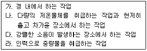
- ㄴ, ㄹ
- ㄱ, ㄴ, ㄷ
- ㄱ, ㄷ, ㄹ
- ㄴ, ㄷ, ㄹ
- ㄱ, ㄴ, ㄷ, ㄹ
(정답률: 알수없음)
12. 산업안전보건법령상 다음 ( ) 안에 들어갈 숫자를 순서대로 배열한 것은?
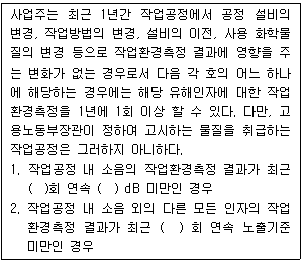
- 2, 75, 2
- 2, 80, 3
- 2, 85, 2
- 3, 80, 3
- 3, 85, 2
(정답률: 알수없음)
13. 산업안전보건법령상 건강진단에 관한 설명으로 옳지 않은 것은?
- 근로자대표가 요구할 때에는 건강진단 시 근로자대표를 입회시켜야 한다.
- 고용노동부장관은 근로자의 건강을 보호하기 위하여 필요하다고 인정할 때에는 사업주에게 특정 근로자에 대한 임시건강진단의 실시나 그 밖에 필요한 조치를 명할 수 있다.
- 배치전건강진단이란 특수건강진단대상업무에 종사할 근로자에 대하여 배치 예정업무에 대한 적합성 평가를 위하여 사업주가 실시하는 건강진단을 말한다.
- 건강진단기관은 건강진단을 실시한 결과 질병 유소견자가 발견된 경우에는 건강진단을 실시한 날부터 60일 이내에 관할 지방고용노동관서의 장에게 보고하여야 한다.
- 사업주는 건강진단 결과를 근로자의 건강 보호ㆍ유지 외의 목적으로 사용하여서는 아니 된다.
(정답률: 알수없음)
14. 산업안전보건법령상 근로자대표가 사업주에게 그 내용 또는 결과를 통지할 것을 요청할 수 있는 사항이 아닌 것은?
- 산업재해 예방계획의 수립에 관하여 산업안전보건위원회가 의결한 사항
- 개별 근로자의 건강진단 결과에 관한 사항
- 작업환경측정에 관한 사항
- 안전보건개선계획의 수립·시행명령을 받은 사업장의 경우 안전보건개선계획의 수립·시행 내용에 관한 사항
- 물질안전보건자료의 작성·비치 등에 관한 사항
(정답률: 알수없음)
15. 산업안전보건기준에 관한 규칙상 석면해체·제거작업 및 유지·관리 등의 조치기준으로 옳지 않은 것은?
- 사업주는 석면해체ㆍ제거작업에 근로자를 종사하도록 하는 경우에는 1급 방진마스크를 지급하여 착용하도록 하여야 한다.
- 사업주는 분말 상태의 석면을 혼합하거나 용기에 넣거나 꺼내는 작업, 절단ㆍ천공 또는 연마하는 작업 등 석면분진이 흩날리는 작업에 근로자를 종사하도록 하는 경우에 석면의 부스러기 등을 넣어두기 위하여 해당 장소에 뚜껑이 있는 용기를 갖추어 두어야 한다.
- 사업주는 석면 취급작업을 마친 근로자의 오염된 작업복은 석면 전용의 탈의실에서만 벗도록 하여야 한다.
- 사업주는 석면해체ㆍ제거작업장과 연결되거나 인접한 장소에 탈의실ㆍ샤워실 및 작업복 갱의실 등의 위생설비를 설치하고 필요한 용품 및 용구를 갖추어 두어야 한다.
- 사업주는 석면해체ㆍ제거작업에서 발생된 석면을 함유한 잔재물은 습식으로 청소하거나 고성능필터가 장착된 진공청소기를 사용하여 청소하는 등 석면분진이 흩날리지 않도록 하여야 한다.
(정답률: 알수없음)
16. 산업안전보건법령상 다음 내용에서 옳은 것을 모두 고른 것은?
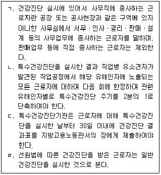
- ㄷ, ㄹ
- ㄱ, ㄴ, ㄷ
- ㄱ, ㄷ, ㄹ
- ㄴ, ㄷ, ㄹ
- ㄱ, ㄴ, ㄷ, ㄹ
(정답률: 알수없음)
17. 산업안전보건법령상 안전ㆍ보건표지 중 안내표지에 해당하는 것은?
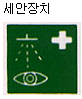
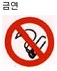
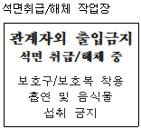
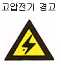
(정답률: 알수없음)
18. 산업안전보건법령상 사업주의 의무에 관한 설명으로 옳은 것은?
- 사업주는 근로자가 산업안전보건법령의 요지를 알 수 있도록 서면으로 교부하여야 한다.
- 외국인근로자를 채용한 사업주는 해당 근로자의 모국어로 된 안전·보건표지와 작업안전수칙을 부착하여야 한다.
- 사업주는 연속적으로 컴퓨터 단말기 작업에 종사하는 근로자에 대하여 작업시간 중에 적절한 휴식시간을 부여하여야 한다.
- 사업주는 작업환경측정 결과를 기록한 서류를 3년간 보존하여야 한다.
- 사업주는 안전·보건표지의 성질상 설치나 부착이 곤란한 경우에는 해당 물체에 직접 도장하여야 한다.
(정답률: 알수없음)
19. 산업안전보건법령상 사업장의 관리감독자가 수행하여야 하는 업무에 해당하는 것은?
- 근로자의 안전·보건교육에 관한 사항
- 위험성평가를 위한 업무에 기인하는 유해ㆍ위험요인의 파악 및 그 결과에 따른 개선조치의 시행에 관한 사항
- 안전·보건과 관련된 안전장치 및 보호구 구입 시의 적격품 여부 확인에 관한 사항
- 작업환경측정 등 작업환경의 점검 및 개선에 관한 사항
- 산업재해에 관한 통계의 기록 및 유지에 관한 사항
(정답률: 알수없음)
20. 산업안전보건법령상 안전관리자에 관한 설명으로 옳은 것은?
- 같은 사업주가 경영하는 둘 이상의 사업장이 같은 시ㆍ군ㆍ자치구 지역에 소재하는 경우에도 사업장마다 각각 안전관리자를 두어야 한다.
- 건설업의 경우 공사금액 120억원(토목공사업에 속하는 공사는 150억원) 이상인 사업장에는 해당 사업장에서 안전관리자의 업무만을 전담하는 안전관리자를 두어야 한다.
- 지방고용노동관서의 장은 중대재해가 연간 2건 발생한 경우 사업주에게 안전관리자를 정수 이상으로 증원할 것을 명할 수 있다.
- 상시 근로자 300명 미만을 사용하는 건설업은 안전관리자의 업무를 안전관리전문기관에 위탁할 수 있다.
- 사업주는 안전관리자를 선임한 경우 선임한 날부터 30일 이내에 고용노동부장관에게 증명할 수 있는 서류를 제출하여야 한다.
(정답률: 알수없음)
21. 산업안전보건법령상 산업안전보건위원회를 설치·운영하여야 하는 사업이 아닌 것은?
- 상시 근로자 50명인 토사석 광업
- 상시 근로자 100명인 비금속 광물제품 제조업
- 상시 근로자 50명인 전투용 차량 제조업
- 상시 근로자 100명인 사무용 기계 및 장비 제조업
- 상시 근로자 50명인 자동차 및 트레일러 제조업
(정답률: 알수없음)
22. 산업안전보건법령상 안전보건관리규정에 관한 설명으로 옳은 것은?
- 안전보건관리규정을 작성하여야 할 경우 소방ㆍ가스ㆍ전기ㆍ교통 분야 등의 다른 법령에서 정하는 안전관리에 관한 규정과 별도로 작성하여야 한다.
- 안전보건관리규정은 해당 사업장에 적용되는 단체협약 및 취업규칙에 우선한다.
- 사업주는 안전보건관리규정을 작성하여야 할 사유가 발생한 날부터 60일 이내에 안전보건관리규정을 작성하여야 한다.
- 사업주가 안전보건관리규정을 변경할 때에 산업안전보건위원회가 설치되어 있지 아니한 사업장의 경우에는 근로자대표에게 통보하면 된다.
- 안전보건관리규정에는 사고 조사 및 대책 수립에 관한 사항이 포함되어야 한다.
(정답률: 알수없음)
23. 산업안전보건법령에 따라 안전·보건진단을 받아 안전보건개선계획을 수립·제출하도록 명할 수 있는 사업장에 해당하는 것은?
- 산업재해율이 같은 업종 평균 산업재해율의 1. 5배인 사업장
- 산업재해율이 같은 업종의 규모별 평균 산업재해율보다 높은 사업장으로서 부상자가 동시에 5명 발생한 사업장
- 2개월의 요양이 필요한 부상자가 동시에 2명 발생한 사업장
- 상시 근로자가 1,200명으로서 직업병에 걸린 사람이 연간 2명 발생한 사업장
- 작업환경 불량 등으로 사회적 물의를 일으킨 사업장
(정답률: 알수없음)
24. 산업안전보건법령상 산업안전지도사 또는 산업보건지도사의 등록을 취소하여야 하는 사유를 모두 고른 것은?
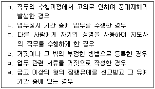
- ㄱ, ㄷ, ㄹ
- ㄱ, ㄹ, ㅂ
- ㄴ, ㄷ, ㅁ
- ㄴ, ㄹ, ㅂ
- ㄷ, ㅁ, ㅂ
(정답률: 알수없음)
25. 산업안전보건법령에서 규정하고 있는 명예산업안전감독관의 업무가 아닌 것은?
- 사업장에서 하는 자체점검 참여 및 근로감독관이 하는 사업장 감독 참여
- 법령을 위반한 사실이 있는 경우 사업주에 대한 개선 요청 및 감독기관에의 신고
- 산업재해 발생의 급박한 위험이 있는 경우 사업주에 대한 작업중지 요청
- 사업장 순회점검ㆍ지도 및 조치의 건의
- 직업성 질환의 증상이 있거나 질병에 걸린 근로자가 여럿 발생한 경우 사업주에 대한 임시건강진단 실시 요청
(정답률: 알수없음)
2과목: 산업보건일반
26. 다음과 같이 동시에 2가지 화학물질에 노출되고 있는 경우에 대한 해석 및 작업환경평가에 관한 설명으로 옳지 않은 것은?
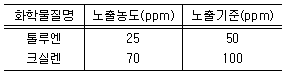
- 작업환경 측정을 위해 활성탄을 사용한다.
- 두 물질은 상가작용을 하는 것으로 판단한다.
- 작업환경측정 시료는 가스크로마토그래피를 사용하여 분석한다.
- 톨루엔과 크실렌은 모두 중추신경계의 억제작용을 하는 것으로 알려져 있다.
- 각각의 화학물질은 기준을 초과하지 않았으므로 노출기준을 초과하지 않은 것으로 판단한다.
(정답률: 알수없음)
27. 공기 중 곰팡이, 박테리아의 농도를 나타내는 단위는?
- CFU/m3
- f/cc
- mg/m3
- mccf
- ppm
(정답률: 알수없음)
28. 외부식 후드를 설계할 때 설계요소의 변동에 따른 필요환기량의 증감에 관한 설명으로 옳지 않은 것은?
- 제어속도가 클수록 필요환기량이 증가한다.
- 플랜지를 부착하면 필요환기량이 감소한다.
- 제어거리가 클수록 필요환기량이 증가한다.
- 덕트의 길이가 증가할수록 필요환기량이 증가한다.
- 후드개방 면적이 작을수록 필요환기량이 감소한다.
(정답률: 알수없음)
29. 공기 중 유해물질과 이를 채취하기 위한 여과지가 잘못 짝지어진 것은?
- 흡입성분진-PVC 필터
- 호흡성분진-PVC 필터
- 석면-PVC 필터
- 납(금속)-MCE 필터
- 농약-유리섬유 필터
(정답률: 알수없음)
30. 소음노출량계를 사용하여 다음과 같은 소음에 노출되는 근로자의 8시간 소음노출량을 측정하면 몇 %가 되겠는가? (단, Threshold=80dB, Criteria=90dB, Exchange rate=5dB)
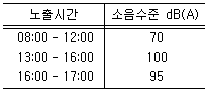
- 75
- 100
- 125
- 150
- 175
(정답률: 알수없음)
31. 화학물질의 인체노출과 그 영향에 관한 설명으로 옳지 않은 것은?
- 암모니아는 용해도가 커서 대부분 인후두부 및 상기도에서 흡수되므로 코와 상기도에 자극을 일으키는 물질로 알려져 있다.
- 이산화탄소는 용해도가 낮아 폐의 호흡영역까지 침투하며, 노출기준을 초과하면 폐포를 자극하여 폐렴을 일으키는 물질로 알려져 있다.
- 작업환경의 노출기준에 '피부' 표기가 되어 있는 화학물질은 피부를 통해 쉽게 흡수될 수 있다는 것을 의미한다.
- 작업장에서 무기납의 주요 노출경로는 호흡기이며, 체내로 흡수된 후 가장 많이 축적되는 조직은 뼈인 것으로 알려져 있다.
- 일산화탄소는 헤모글로빈과 친화력이 산소보다 약 200배 이상 높기 때문에 산소보다 먼저 헤모글로빈과 결합하여 혈액의 산소운반능력을 저해하는 것으로 알려져 있다.
(정답률: 알수없음)
32. 수은 화합물의 흡수와 대사 및 건강영향에 관한 설명으로 옳지 않은 것은?
- 수은은 혈액뇌장벽(Brain Blood Barrier, BBB)이나 태반을 통과할 수 있는 것으로 알려져 있다.
- 무기수은은 위장이나 소장과 같은 소화기계를 통해서는 거의 흡수되지 않는 것으로 알려져 있다.
- 무기수은은 상온에서 기화되므로 수은온도계 제조공정에서 수은을 주입하는 근로자는 호흡기를 통해 체내로 수은이 흡수될 가능성이 높은 것으로 알려져 있다.
- 수은은 인체에 흡수되면 대부분 뼈에 축적되며, 뼈에 축적된 수은은 서서히 혈액으로 빠져나와 뇌로 이동하여 뇌병변장해를 일으키는 것으로 알려져 있다.
- 수은은 SH- 기능기와의 친화력이 높아 SH- 기능기를 가진 효소에 작용하여 기능장해를 일으키는 것으로 알려져 있다.
(정답률: 알수없음)
33. 근골격계부담작업을 평가하는 도구 중에서 '중량물 취급작업'을 평가하기 위한 도구만 고른 것은?
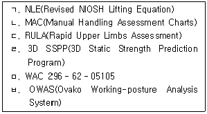
- ㄱ, ㄴ
- ㄴ, ㄷ
- ㄷ, ㄹ
- ㄹ, ㅂ
- ㅁ, ㅂ
(정답률: 알수없음)
34. 벤젠의 생물학적 노출지표로 사용되는 대사산물은?
- 메틸마뇨산
- 메트헤모글로빈
- S-페닐머캅토산
- 2,5-헥산디온
- 카르복시헤모글로빈
(정답률: 알수없음)
35. 산업안전보건법령에 규정되어 있는 특수건강진단의 대상이 아닌 근로자는?
- 크롬에 노출되는 근로자
- 유리섬유분진에 노출되는 근로자
- 1일 8시간 작업시 85dB(A) 이상의 소음에 노출되는 근로자
- 1일 6시간 이상 전화상담 등 감정노동에 종사하는 근로자
- 상시근로자 300인 이상 사업장에서 최근 6개월간 오후 10시부터 오전 6시까지 월평균 80시간 이상 일하는 근로자
(정답률: 알수없음)
36. 산업재해 지표에 관한 설명으로 옳은 것은?
- 건수율은 연작업시간당 재해발생 건수이다.
- 도수율은 천인율 또는 발생률이라고도 한다.
- 강도율은 연 100만 작업시간당 작업손실일수를 말한다.
- 도수율은 작업시간이 고려되지 않은 산업재해 지표이다.
- 사망만인률은 근로자 1만명당 산업재해로 인한 사망자수를 말한다.
(정답률: 알수없음)
37. 석면노출로 인한 중피종의 위험을 평가하고자 역학연구를 실시하기 위하여 석면공장에서 10년 이상 근무한 적이 있는 근로자 집단을 파악하고, 이 집단과 유사한 인구학적 특성(성별, 연령 등)을 가진 일반 인구집단도 선정하여 중피종으로 인한 사망자를 파악하였다. 이와 같은 방식의 역학연구에 관한 설명으로 옳은 것은?
- 단면연구(Cross Sectional Study)라고 하며, 석면으로 인한 중피종 사망 위험은 조사망율(Crude Death Rate)로 평가한다.
- 환자대조군 연구(Case Control Study)라고 하며, 석면으로 인한 중피종 사망 위험은 교차비(OR: Odds Ratio)로 산출된다.
- 환자대조군 연구(Case Control Study)라고 하며, 석면으로 인한 중피종 사망위험은 상대적 위험비(RR: Risk Ratio)로 산출된다.
- 전향적 코호트 연구(Prospective Cohort Study)라고 하며, 석면으로 인한 중피종 사망 위험은 교차비(OR: Odds Ratio)로 산출된다.
- 후향적 코호트 연구(Retrospective Cohort Study)라고 하며 석면으로 인한 중피종 사망위험은 상대적 위험비(RR: Risk Ratio)로 산출된다.
(정답률: 알수없음)
38. 산업보건역사에 관한 설명으로 옳지 않은 것은?
- 히포크라테스가 납중독에 대한 기록을 남겼다.
- 중세시대에 아그리콜라에 의해 구리에 대한 직업적 노출기준이 처음으로 제안되었다.
- 이탈리아의 의사 라마찌니가 최초로 직업병의 원인을 유해물질(요인)과 불안전한 작업자세라는 점을 명시했다.
- 산업혁명 초기에는 공장 안은 물론 인접지역까지 공기, 물 등의 오염으로 개인위생이 중요한 문제로 대두되었다.
- 파라셀수스는 “모든 물질은 그 양(dose)에 따라 독(poison)이 될 수도 있고 치료약(remedy)이 될 수도 있다. ”고 하였다.
(정답률: 알수없음)
39. 가로, 세로, 높이가 각각 20m, 10m, 5m인 밀폐된 대형 챔버에 톨루엔 1L가 쏟아져 모두 증발했다. 이 때 공기 중 톨루엔 농도(ppm)는 약 얼마인가? (단, 톨루엔의 분자량은 92, 비중은 0. 86, 온도와 압력은 정상조건이다. )
- 118
- 228
- 338
- 448
- 558
(정답률: 알수없음)
40. 배치전 건강진단 결과 다음과 같이 여러 가지 건강장해 요인을 가진 근로자들이 나타났다. 피혁 가공공정에서 DMF로 인한 건강장해를 예방하기 위해 배치하지 말아야 할 필요성이 가장 높은 근로자는?
- 청력장해가 있는 근로자
- 제한성 폐기능장해가 있는 근로자
- 폐활량이 저하된 근로자
- 간기능 장해가 있는 근로자
- 폐쇄성 폐기능장해가 있는 근로자
(정답률: 알수없음)
41. 근로자 건강을 보호하기 위한 작업환경관리의 우선순위를 바르게 연결한 것은?
- 제거→대체→환기→교육→보호구착용
- 환기→보호구착용→대체→제거→교육
- 환기→제거→대체→교육→보호구착용
- 보호구착용→교육→제거→대체→환기
- 보호구착용→환기→제거→대체→교육
(정답률: 알수없음)
42. 청력보호구에 관한 설명으로 옳은 것은?
- 귀마개나 귀덮개의 차음효과는 주파수별로 차이가 없어야 한다.
- 현장에서 귀마개를 착용할 때의 차음효과는 NRR보다는 낮다.
- 1종(EP-1형) 귀마개는 저주파수보다 고주파수의 소음을 차단하기 위한 귀마개이다.
- 귀마개와 귀덮개를 동시에 착용하면 합산 차음효과는 각각의 차음효과를 더하여 산출한다.
- 귀마개의 NRR은 모든 주파수의 소음수준이 법적 기준인 90dB이라고 가정하고 계산한 차음효과값이다.
(정답률: 알수없음)
43. 인체의 주요 장기 및 조직에서 기본이 되는 단위조직의 명칭과 대표적인 유해요인이 잘못 짝지어진 것은?
- 신경-시냅스-노말헥산
- 신장-네프론-수은
- 폐-폐포-유리규산
- 간-간소엽-사염화탄소
- 근육-근섬유-반복작업
(정답률: 알수없음)
44. 인체의 청각기관에 관한 설명으로 옳지 않은 것은?
- 내이에서 소리에너지의 이동경로는 난형창→전정관 →고실계→원형창이다.
- 중이는 추골, 침골, 등골의 조그만 뼈로 구성되어 있으며, 고막의 진동을 내이로 전달하는 기능을 한다.
- 내이는 난형창 쪽에서부터 안쪽으로 20,000Hz에서 20Hz까지의 소리를 감지하는 모세포(hair cell)가 배치되어 있다.
- 청각기관은 바깥귀부터 고막까지를 외이, 고막에서 난형창까지를 중이, 난형창 내부의 코르티 기관을 내이로 나눈다.
- 내이는 3개의 관으로 나뉘어져 있으며 소리의 통로가 되는 전정관과 고실계는 공기로 채워져 있으며, 소리를 감지하는 모세포(hair cell)에 있는 코르티 기관은 액체로 채워져 있다.
(정답률: 알수없음)
45. 비스코스 레이온 공정에서 이황화탄소 노출을 평가하기 위해 다음과 같이 개인시료를 포집한 후 가스크로마토그래피로 분석하였다. 이 근로자의 6시간 동안 이황화탄소 노출농도(ppm)는 약 얼마인가?
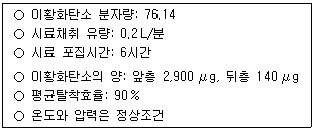
- 5
- 10
- 15
- 20
- 25
(정답률: 알수없음)
46. 방진마스크의 성능 및 검정 기준에 관한 설명으로 옳은 것은?
- 방진마스크의 성능은 여과효율이 동등하다면 흡배기저항이 높을수록 우수하다.
- 방진마스크를 현장에서 사용하는 시간이 길어지면 여과지의 기공에 먼지가 축적됨에 따라 먼지의 여과효율은 점점 감소한다.
- 방진마스크의 여과효율은 먼지의 크기가 작아질수록 점점 낮아진다.
- 특급, 1급, 2급으로 구분하며 각각의 최소여과효율은 99%, 95%, 90% 이상이어야 한다.
- 여과효율을 검정하기 위한 먼지의 크기는 공기역학적 직경으로 0. 3 내외이다.
(정답률: 알수없음)
47. 뇌심혈관계 질환의 위험이 높은 근로자가 뇌심혈관계 질환 예방을 위해 노출되지 않도록 관리해야 할 유해요인으로 우선순위가 가장 낮은 것은?
- 고열
- 질산염
- 베릴륨
- 스트레스
- 일산화탄소
(정답률: 알수없음)
48. 최근 산재사고 예방을 위해 우리나라에서 적극적으로 도입하고 있는 위험성평가 제도의 취지와 실무에 관하여 가장 잘 설명하고 있는 것은?
- 50인 미만 소규모 사업장은 적용대상에서 제외되어 있다.
- 위험성평가는 기본적으로 사업장의 안전보건관리를 해야 하는 사업주와 근로자에 의해 이루어져야 한다.
- 위험성평가는 기본적으로 유해위험요인에 대한 전문지식과 개선 및 관리에 대한 공학적 지식 및 기술을 가진 전문가에 의뢰하여 실시하여야 한다.
- 발암성 물질과 같은 유해화학물질의 위험성 평가는 1년에 2회 이상 작업환경 측정 결과를 노출기준과 비교하여 평가하여야 한다.
- 위험성평가란 기계, 기구, 설비 및 화학물질, 그 자체의 위험성 및 유해성을 평가하는 것으로 전문기관에서 객관적으로 평가하는 것을 말한다.
(정답률: 알수없음)
49. 석유화학공장의 야외에서 유사한 직무를 수행하는 근로자 30명의 공기 중 1,3-부타디엔 노출농도를 측정하였다. 측정결과의 통계자료에 관한 설명으로 옳지 않은 것은?
- 일반적으로 정규분포보다는 기하분포를 할 것으로 기대된다.
- 1,3-부타디엔 노출농도의 기하평균은 산술평균보다 클 것이다.
- 노출농도의 기하평균 단위는 ppm이지만 기하표준편차는 단위가 없다.
- 노출농도를 로그변환하면 변환된 자료는 정규분포를 할 것으로 기대된다.
- 기하평균이 같다면 기하표준편차가 클수록 노출기준을 초과할 확률은 커진다.
(정답률: 알수없음)
50. 가로, 세로, 높이가 각각 10m, 15m, 4m인 사무실에서 120명이 근무하고 있다. 이 사무실의 이산화탄소(CO2) 농도를 1,000ppm이하로 유지하고자 할 때, 최소환기율은 ACH(hr-1)로 나타내면 약 얼마인가?
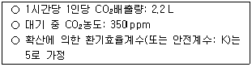
- 1. 4
- 2. 1
- 2. 4
- 3. 4
- 3. 9
(정답률: 알수없음)
3과목: 기업진단 · 지도
51. 관찰 및 측정이 가능하고 직무와 관련된 피평가자의 행동을 평가기준으로 하는 행동기준고과법(BARS: behaviorally anchored rating scales)의 개발 절차를 순서대로 옳게 나열한 것은?
- 행동기준고과법 개발위원회 구성→중요사건의 열거→중요사건의 범주화→중요사건의 재분류→중요사건의 등급화→확정 및 실시
- 행동기준고과법 개발위원회 구성→중요사건의 열거→중요사건의 범주화→중요사건의 등급화→중요사건의 재분류→확정 및 실시
- 행동기준고과법 개발위원회 구성→중요사건의 열거→중요사건의 등급화→중요사건의 재분류→중요사건의 범주화→확정 및 실시
- 행동기준고과법 개발위원회 구성→중요사건의 열거→중요사건의 등급화→중요사건의 범주화→중요사건의 재분류→확정 및 실시
- 행동기준고과법 개발위원회 구성→중요사건의 열거→중요사건의 재분류→중요사건의 범주화→중요사건의 등급화→확정 및 실시
(정답률: 알수없음)
52. 카플란(Kaplan)과 노턴(Norton)에 의해 개발된 균형성과표(BSC: balanced scorecard)의 운용체계는 4가지 관점에서 파생되는 핵심성공요인(KPI: key performance indicators)들의 유기적 인과관계로 구성되는데, 4가지 관점으로 모두 옳은 것은?
- 재무적 관점, 고객 관점, 외부 경쟁환경 관점, 학습ㆍ성장 관점
- 재무적 관점, 고객 관점, 내부 프로세스 관점, 학습ㆍ성장 관점
- 재무적 관점, 자재 관점, 외부 경쟁환경 관점, 학습ㆍ성장 관점
- 재무적 관점, 고객 관점, 외부 경쟁환경 관점, 직무표준 관점
- 재무적 관점, 자재 관점, 내부 프로세스 관점, 직무표준 관점
(정답률: 알수없음)
53. 도요타생산방식(TPS: toyota production system)에서 낭비를 철저하게 제거하기 위한 방법으로 활용된 적시생산시스템(JIT: just in time)에 관한 설명으로 옳은 것만을 모두 고른 것은?
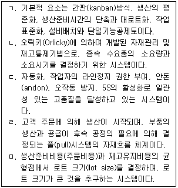
- ㄱ, ㄹ
- ㄴ, ㅁ
- ㄷ, ㄹ
- ㄱ, ㄷ, ㄹ
- ㄴ, ㄷ, ㅁ
(정답률: 알수없음)
54. 혁신적인 품질개선을 목적으로 개발된 기업 경영전략인 6시그마 프로젝트 수행단계(DMAIC)에 관한 설명으로 옳지 않은 것은?
- 정의(define): 문제점을 찾아내는 첫 단계
- 측정(measurement): 문제 수준을 계량화하는 단계
- 통합(integration): 원인과 대책을 통합하는 단계
- 분석(analysis): 상태 파악과 원인분석을 하는 단계
- 관리(control): 관리계획을 실행하는 단계
(정답률: 알수없음)
55. 생산시스템을 설계하고 계획, 통제하는 초기단계로 총괄생산계획(APP: aggregate production planning), 주생산일정계획(MPS: master production schedule), 자재소요계획(MRP: material requirement planning) 등에 기초자료로 활용되는 수요예측(demand forecasting) 방법에 관한 설명으로 옳지 않은 것은?
- 패널법(panel consensus)은 다양한 계층의 지식과 경험을 기초로 하고, 관련 예측정보를 공유한다.
- 소비자조사법(market research)은 설문지 및 전화에 의한 조사, 시험판매 등을 활용하여 예측한다.
- 단순이동평균법(simple moving average method)의 예측값은 과거 n기간 동안 실제 수요의 산술평균을 활용한다.
- 시계열분해법(time series method)은 시계열을 4가지 구성요소로 분해하여 수요를 예측하는 방법이다.
- 델파이법(delphi method)은 설득력 있는 특정인에 의해 예측결과가 영향을 받는 장점이 존재한다.
(정답률: 알수없음)
56. 단체교섭의 절차에 관한 설명으로 옳지 않은 것은?
- 노사간의 교섭안을 차례로 제시하고 대응하며 양측에 요구사항을 수시로 수정해야 협상이 가능하다.
- 노사간의 교섭과정에서 끝까지 타협이 안 된다면 정부나 제3자의 조정 및 중재가 필요하다.
- 노사간의 협상내용이 타결되면 단체협약서를 작성하고 협약내용을 관리할 필요가 있다.
- 사용자가 파업근로자 대신 임시직을 채용하거나 비조합원들을 파업 장소로 이동시켜 대체할 수 있다.
- 노사간의 협상이 결렬되면 양측은 서로에 대해 파업과 직장폐쇄 등으로 실력을 행사할 수 있다.
(정답률: 알수없음)
57. 기능별 조직과 프로젝트(project) 팀조직을 결합시킨 형태의 조직으로, 1명의 직원이 2명 이상의 상사로부터 명령을 받을 수 있어 명령통일의 원칙(principle of unity command)에 혼란을 겪을 수 있는 조직구조는?
- 매트릭스 조직
- 사업부제 조직
- 네트워크 조직
- 가상네트워크 조직
- 가상 조직
(정답률: 알수없음)
58. 리더십 이론에 관한 설명으로 옳은 것은?
- 행동이론 중 미시간 대학의 연구에서 직무중심 리더는 부하의 인간적 측면에 관심을 갖고, 종업원중심 리더는 부하의 업무에 관심을 갖고 있다는 것을 규명하였다.
- 상황이론 중 경로-목표 이론에서는 리더행동을 지시적 리더십, 지원적 리더십, 참여적 리더십, 성취지향적 리더십으로 분류하였다.
- 특성이론에서는 여러 특성을 가진 리더가 모든 상황에서 효과적이라고 주장하였다.
- 행동이론 중 오하이오 주립대학의 연구에서 배려하는 리더와 부하 사이의 관계는 상호신뢰를 형성하기가 어렵다는 것을 규명하였다.
- 상황이론 중 규범모형은 기본적으로 부하들이 의사결정에 참여하는 정도가 상황의 특성에 맞게 달라질 필요가 없다고 가정하였다.
(정답률: 알수없음)
59. 조직문화의 순기능에 관한 설명으로 옳지 않은 것은?
- 조직구성원들에게 일체감을 조성한다.
- 조직구성원들의 생각과 행동지침이나 규범을 제공한다.
- 조직의 안정성과 계속성을 갖게 한다.
- 조직구성원들에게 획일성을 갖게 한다.
- 조직구성원들의 태도와 행동을 통제하는 기제(mechanism) 기능을 한다.
(정답률: 알수없음)
60. “신입사원 선발시험점수(예측점수)와 업무성과(준거점수)의 상관계수가 0. 4이다. ”의 설명으로 옳은 것은?
- 선발시험점수가 업무성과 변량의 16%를 설명한다.
- 입사 지원자의 16%가 합격할 것이다.
- 선발시험점수가 업무성과 변량의 40%를 설명한다.
- 입사 지원자의 40%가 합격할 것이다.
- 입사 지원자의 선발시험점수가 40점 이상일 경우 합격한다.
(정답률: 알수없음)
61. 동일한 길이의 두 선분에서 양쪽끝 화살표의 방향이 달라짐에 따라 선분의 길이가 서로 다르게 지각되는 착시 현상은?
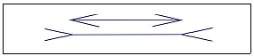
- 뮬러-라이어 착시
- 유도운동 착시
- 파이운동 착시
- 자동운동 착시
- 스트로보스코픽운동 착시
(정답률: 알수없음)
62. 선발도구의 효과성에 관한 설명으로 옳은 것만을 모두 고른 것은?
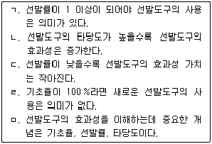
- ㄱ, ㄴ
- ㄱ, ㄹ
- ㄴ, ㄷ, ㅁ
- ㄴ, ㄹ, ㅁ
- ㄷ, ㄹ, ㅁ
(정답률: 알수없음)
63. 효과적인 팀 수행을 위해서 공유된 정신모델(shared mental model)을 구축하고자 할 때, 주의해야 하는 잠재적ㆍ부정적 측면인 집단사고(groupthink)에 관한 설명으로 옳지 않은 것은?
- 집단사고의 예로는 1960년대 미국이 쿠바의 피그만을 침공한 것과 1980년대 우주왕복선 챌린저호의 폭발사고가 있다.
- 팀 구성원들은 만장일치로 의견을 도출해야 한다는 환상을 가지고 있다.
- 자신이 속한 집단에 대한 강한 사회적 정체성을 느끼는 팀에서는 일어나지 않는다.
- 팀 안에서 반대 의견을 표출하기가 힘들다.
- 선택 가능한 대안들을 충분히 고려하지 않고 선택적으로 정보처리를 하는데서 발생한다.
(정답률: 알수없음)
64. 브룸(Vroom)은 직무동기의 힘을 3가지 인지적 요소들에 의한 함수관계로 정의하였다. 다음 공식의 a와 b에 들어갈 요소를 순서대로 나열한 것은?
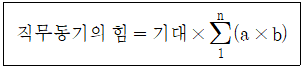
- 기대, 유인가
- 기대, 도구성
- 공정성, 유인가
- 공정성, 도구성
- 유인가, 도구성
(정답률: 알수없음)
65. 교대근무의 부정적 효과에 관한 설명으로 옳지 않은 것은?
- 야간작업은 멜라토닌 생성ㆍ조절을 방해하여 면역체계를 약화시킨다.
- 순환적 야간근무보다 고정적 야간근무가 신체·심리적 건강을 더 위협한다.
- 교대작업은 배우자나 자녀와의 여가생활을 어렵게 하여 사회적 문제를 유발할 수 있다.
- 순행적 교대근무보다 역행적 교대근무가 적응하기 더 어렵다.
- 야간조명은 자연광선 효과를 대신할 수 없고, 낮잠은 밤에 자는 것과 같은 효과를 나타내지 못한다.
(정답률: 알수없음)
66. 직장내 안전사고와 관련된 요인에 관한 설명으로 옳지 않은 것은?
- 일을 수행하는데 안전을 위한 단계를 지켜야 한다는 종업원의 공유된 지각이 필요하다.
- 성격 5요인(Big-five) 중에서 성실성은 안전사고와 관련된다.
- 직무만족이 높을수록 안전사고가 감소한다.
- 일과 무관한 개인적 스트레스 요인은 안전사고에 영향을 주지 않는다.
- 시간급보다 생산성에 따라 급여를 받는 능률급은 안전을 더 저해하는 요인으로 작용할 수 있다.
(정답률: 알수없음)
67. 작업스트레스에 관한 설명으로 옳은 것은?
- 급하고 의욕이 강한 A유형 성격의 사람들은 스트레스 조절능력이 강해서 느긋하고 이완된 B유형의 사람들과 비교하여 심장질환에 걸릴 확률이 절반 정도로 낮다.
- 스트레스 출처에 대한 이해가능성, 예측가능성, 통제가능성 중에서 스트레스 완화효과가 가장 큰 것은 예측가능성이다.
- 내적 통제형의 사람들은 자신들이 스트레스 출처에 대해 직접적인 영향력을 행사하려고 하지 않고 그냥 견딘다.
- 공항에서 근무하는 소방관의 경우 한 건의 화재도 없이 몇 주 동안 대기근무만 하였을 때 스트레스가 없다.
- 작업스트레스는 역할 과부하에서 주로 발생하며, 역할들 간의 갈등으로는 발생하지 않는다.
(정답률: 알수없음)
68. 일과 가정간의 관계를 설명하는 3가지 기본 모델을 모두 고른 것은?
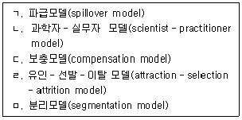
- ㄱ, ㄴ, ㄷ
- ㄱ, ㄷ, ㄹ
- ㄱ, ㄷ, ㅁ
- ㄴ, ㄷ, ㄹ
- ㄴ, ㄹ, ㅁ
(정답률: 알수없음)
69. 풀 프루프(fool proof)가 적용된 기계ㆍ기구에 해당되지 않는 것은?
- 카메라의 이중촬영 방지기구
- 프레스기의 양수조작식 방호장치
- 압력용기의 안전밸브
- 사출성형기의 인터로크(interlock)식 가드
- 산업용 로봇의 작업장(안전울) 안전플러그
(정답률: 알수없음)
70. 사업장 위험성평가에 관한 지침상 '위험성 추정'을 하는 방법으로 옳은 것을 모두 고른 것은?
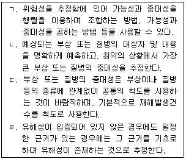
- ㄱ, ㄴ
- ㄱ, ㄷ
- ㄱ, ㄴ, ㄷ
- ㄱ, ㄴ, ㄹ
- ㄱ, ㄷ, ㄹ
(정답률: 알수없음)
71. 심실세동에 관한 설명으로 옳지 않은 것은?
- 전류의 일부가 심장부분으로 흐르게 되어 심장이 정상적인 맥동을 하지 못하는 현상이다.
- 심실세동으로 인한 불규칙한 맥동에서 전류를 제거하면 거의 정상으로 되돌아 온다.
- 심실세동 전류값은 통전시간과 연관성이 높다.
- 심실세동 극대점 이상의 전류에서는 심실세동을 일으킬 확률이 감소한다.
- 심실세동에 의한 사망위험은 저전압에서 비교적 작은 전류가 흐르는 경우가 큰 전류가 흐르는 경우보다 크다.
(정답률: 알수없음)
72. 사업장의 안전보건경영체제 구축을 위하여 안전보건경영방침을 수립하여야 한다. 안전보건경영방침에 포함되지 않아도 되는 것은?
- 위험성평가의 방법 및 범위
- 모든 근로자의 안전보건을 확보하기 위한 지속적인 개선 및 실행 의지
- 조직의 안전보건 위험 특성과 조직 규모의 적합
- 법적 요구사항 준수 의지
- 경영자의 안전보건경영 철학
(정답률: 알수없음)
73. 보호구의 성능기준 및 사용에 관한 설명으로 옳은 것은?
- 안전모의 종류 중 AE형은 물체의 낙하 또는 비래에 의한 위험을 경감하고, 머리부위 감전에 의한 위험을 방지하기 위한 것으로 6,000V 이상의 전압에 견디는 내전압성을 갖는 것을 말한다.
- 내절연용 절연장갑의 종류에서 가장 낮은 등급(00등급)의 최대사용전압은 교류, 직류 모두 750V 이하이다.
- 유기화합물용 방독마스크의 정화통 외부 측면의 표시 색은 노랑색으로 표시하여야 한다.
- 추락방지대란 신체지지 목적으로 전신에 착용하는 띠 모양의 것으로서 상체 등 일부분만 지지하는 것은 제외한다.
- 1종 방음용 귀마개는 저음부터 고음까지 차음하는 것으로서 차음성능은 중심주파수 1,000Hz에서 20dB 이상의 차음치를 가져야 한다.
(정답률: 알수없음)
74. 방호장치가 미설치된 프레스에서 작업 중에 3개월 이상의 요양이 필요한 1명의 부상자가 발생하였다. 이 상황에 대한 설명으로 옳은 것은?
- 산업안전보건법상 중대재해 조사대상이며, 원인을 분석하여 대책을 수립하여야 한다.
- 하인리히(H. W. Heinrich)의 도미노 이론에 의하면 4단계인 사고를 제거하면 예방할 수 있는 재해이다.
- 버드(Frank Bird)의 신도미노 이론에서 5단계인 상해를 제거하면 예방할 수 있는 재해이다.
- 발생된 사고가 인적 손실이 수반됨으로 '아차사고'라 할 수 있다.
- 작업 전 프레스의 이상 여부와 방호장치를 점검하면 예방할 수 있는 재해이다.
(정답률: 알수없음)
75. 산업안전보건법령상 사업장의 위험성평가에 관한 설명으로 옳은 것은?
- 위험성평가는 사업주가 스스로 사업장의 유해ㆍ위험요인을 찾아내어 위험성을 결정하고 이를 평가ㆍ관리ㆍ개선하는 자율적 제도이다.
- 위험성평가는 사업주가 직접 참여하여 실시하고 위험성평가 실시의 총괄 관리를 위임하여서는 아니 된다.
- 사업주는 위험성평가를 효과적으로 실시하기 위하여 '사전조사서'를 작성하여야 한다.
- 위험성평가의 종류에는 최초평가, 수시평가 및 정기평가로 구분하여 실시하는데 정기평가는 최초평가 후 매년 정기적으로 실시해야 한다.
- 허용 가능한 위험성의 기준은 예산의 범위, 사업장의 특성 등을 고려하여 위험성 결정을 한 후에 사업장 자체적으로 설정해 두어야 한다.
(정답률: 알수없음)